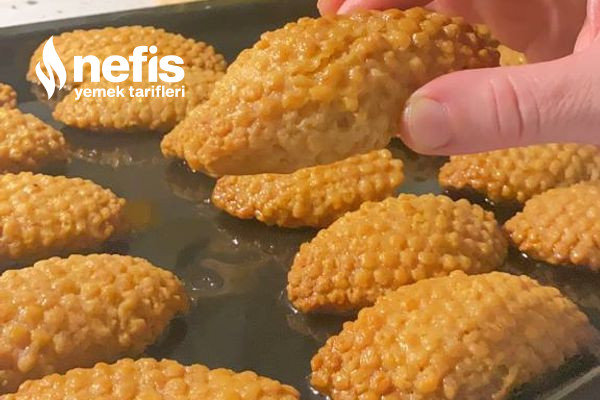

Kıyır Kıyır Kalbusbastı Tatlısı

Kıyır Kıyır Kalburbastı Tatlısı Tarifi için Malzemeler
- 1 su bardak sıvı yağ( bardak ölçüm 200ml)
- 1 su bardağı zeytinyağı
- 1 su bardağı süt
- 5 su bardağı un kontrollü olun bende 5 bardak gitti
Şurubu için
- 3 su bardağı su
- 3 su bardağı şeker
- 1 ince dilim limon
İçi için
Kıyır Kıyır Kalburbastı Tatlısı Tarifi Nasıl Yapılır ?
-
Öncelikle bir tencereye şerbet malzemelerimizi karıştırıp limonuda
ekleyip ateşe
alalım kaynayınca orta ateşte 15 dakika daha kaynatıp ateşten alıp
soğumaya
bırakalım.
-
Öncelikle uygun bir kaba 4 su bardağı unumuzu kabartma tozunu ekleyip
bir
çırpıcıylaıyla karıştıralım daha sonra sıvıları ekleyip, karıştıralım,
1 bardak daha un
ekleyip toplayalım.
-
Resimdeki gibi ceviz büyüklüğünde hamurumuzu nihalenin üzerinde
bastırarak
ortasına cevizimizi koyup uç kısımlarını birleştirelim ve ters
çevirelim yağlı fırın
tepsisine dizelim.
-
180 derecelik ısınmış fanlı fırında altı üstü kızarana dek pişirelim.
-
Fırından çıkan tatlımıza soğuk şerbetimizi dökelim şerbeti çekince
servise hazır.